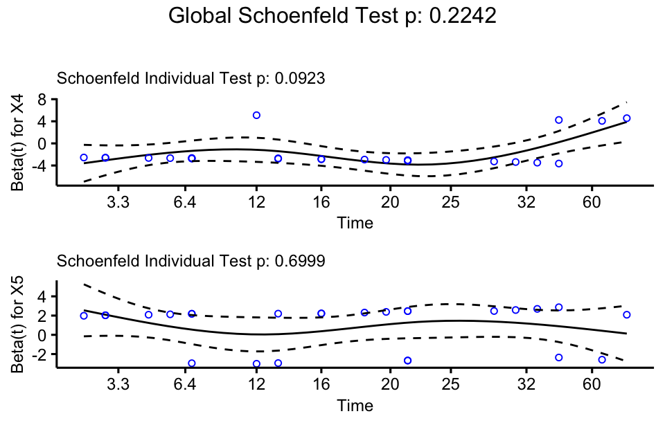

library(tidyverse)
library(survival)
library(survminer)
library(ggplot2)21 Survival analysis
In the medical field, survival analysis is widely used to study the time from a starting point to the occurrence of an important event, such as death, disease recurrence, or remission. It plays a critical role in analyzing time-to-event data, understanding the relationship between time and event occurrence, especially when some subjects do not experience the event during the study period, resulting in censored data. The core of survival analysis lies in properly handling censored data and time-related event occurrences, in order to effectively estimate survival probabilities and analyze risk factors.
21.1 Prerequisite
21.2 Basic concepts
Survival data has several distinctive characteristics that differentiate it from other types of data, which make specialized methods necessary for analysis. The key characteristics of survival data include time-to-event data, censored data, non-normal distribution, and multiple covariates that influence survival time. Here is an example used to illustrate these features and related concepts.
Example 1
To estimate the survival time of patients who are HIV-positive, a researcher conducted a clinical follow-up study. The subjects were individuals diagnosed with HIV in a certain city between January 1, 2002, and December 31, 2004. These subjects were followed until they died of AIDS or its complications (with status = 1 for death, and 0 for censored cases). The study cutoff date was December 31, 2008. Additionally, the gender (sex = 1 for male, 0 for female), age (in years), and medication status (drug = 1 for on medication, 0 for not on medication) of each subject were recorded. The data format are shown in Table 21.1 .
df <- read_csv("datasets/ex21-01.csv", show_col_types = F)| ID | startpoint | endpoint | time | gender | age | treat | status |
|---|---|---|---|---|---|---|---|
| 1 | 2004-10-07 | 2005-08-07 | 10 | 0 | 27 | 1 | 1 |
| 2 | 2002-06-29 | 2002-07-29 | 1 | 0 | 47 | 1 | 0 |
| 3 | 2004-08-02 | 2005-01-01 | 5 | 1 | 40 | 1 | 1 |
| 4 | 2004-04-05 | 2007-02-03 | 34 | 1 | 37 | 0 | 1 |
| 5 | 2004-10-01 | 2004-10-31 | 1 | 0 | 33 | 1 | 1 |
| 6 | 2003-12-12 | 2004-01-11 | 1 | 0 | 42 | 1 | 1 |
21.2.1 Time-to-event
Time-to-event, also known as survival time, refers to the duration from a specified starting point (such as the onset of a condition, diagnosis, or treatment initiation) to the occurrence of a specific event of interest (such as death, disease progression, or recovery).
In Example 1, survival time represents the time from when the patient was diagnosed as HIV-positive (
startpoint) until death or censoring (endpoint). Thetimecolumn in Table 21.1 indicates the survival time in months for each participant.For example: patient with ID=1 has a survival time of 10 months, from October 7, 2004, to August 7, 2005.
The survival times are often non-normally distributed and typically show a skewed distribution. Standard statistical techniques that assume normality are not appropriate for survival data, so specialized models like the Cox proportional hazards model or accelerated failure time models are used instead. Here is the normality test on the variable of survival time in Example 1 using shapiro.test() function:
select(df, time) |>
pull() |>
shapiro.test()#>
#> Shapiro-Wilk normality test
#>
#> data: pull(select(df, time))
#> W = 0.65927, p-value = 6.682e-14Moreover, survival data typically exhibits heterogeneity, meaning that the time to the event is influenced by multiple factors, such as age, gender, disease stage, or treatment. Covariates need to be incorporated into survival models (e.g., Cox models) to analyze these factors’ impact on survival time.
Survival analysis revolves around time-to-event data, and focuses on estimating the probability that an event has not yet occurred at a certain point in time and identifying factors influencing this time.
21.2.2 Censoring
The analysis of time-to-event data often involves censoring, where the exact time of the event is unknown for some individuals. Censoring occurs when the event of interest has not happened for some individuals by the end of the study or they are lost to follow-up. This means we only know that the individual survived up to a certain point, but not the exact time of the event. The common types of censoring includes:
Right censoring: The most common type. It happens when an individual has not experienced the event by the end of the study. For example, a patient participates in a five-year study but is still alive at the end.
Left censoring: When the event has occurred before the observation, but the exact time is unknown. For example, a patient is diagnosed with a disease but the precise time of infection is unknown.
Interval censoring: The event occurs within a known time interval, but the exact time is unknown. For example, a patient is diagnosed with a disease between two follow-up visits.
In Table 21.1 , the
statuscolumn indicates whether the event (death) occurred: status = 1 means the patient died during the study (i.e., the event occurred), status = 0 indicates that the patient’s death was not observed, meaning they were censored.For example, patient with ID=2 has status = 0, meaning the patient did not die by the end of the follow-up period, making this case censored data.
21.2.3 Survival rate
The survival rate refers to the proportion of individuals who survive for a specific period of time. It is typically expressed as the percentage of individuals who are still alive at a given time interval. For example, a 5-year survival rate of 80% means that 80% of patients are still alive 5 years after diagnosis or treatment.
Survival rate can be derived from the survival function. The survival function, denoted as S(t), is a continuous function that gives the probability of an individual surviving beyond a specific time t. It is the key concept in survival analysis and shows how the probability of survival decreases over time. Mathematically, S(t) is defined as:
S(t) = P(T > t)
where T is the time to the event (e.g., death), and t is a specific time point. For example, if S(5) = 0.80, this means that 80% of the individuals are expected to survive beyond 5 years. The survival function is typically visualized using a Kaplan-Meier curve, which plots the probability of survival against time. The curve generally starts at 1 (100% survival) and declines as time increases.
21.2.4 Hazard rate
The hazard rate, also known as the instantaneous failure rate, describes the likelihood (or risk) that an event (e.g., death or failure) will occur at a particular instant, given that the individual has survived up to that point. It measures the “risk” at a specific time.
For instance, if you have survived 5 years, the hazard rate at that moment tells you how likely it is that you will experience the event (e.g., death) in the next moment of time. The hazard rate has the units of “events per unit time.” It can be interpreted as the instantaneous rate of event occurrence at a certain time.
The hazard function, denoted as h(t), is a continuous function that gives the hazard rate at any given time t. It provides the instantaneous rate at which events happen at time t, conditional on the fact that the individual has survived until that time. Mathematically, the hazard function is defined as:
h(t) = \lim_{\Delta t \to 0} \frac{P(t \leq T < t + \Delta t \mid T \geq t)}{\Delta t}
where T is the time to the event.
For example, if the hazard function h(t) = 0.02 at time t = 5 , this means the instantaneous risk of the event occurring at year 5 is 2\% per unit of time, given that the subject has survived up to that point.
The survival function S(t) is related to the hazard function. In fact, the hazard function can be used to derive the survival function:
S(t) = \exp\left(-\int_0^t h(u) du \right)
This shows that the survival function decreases as the hazard function increases. A higher hazard implies a greater risk of event occurrence, leading to a lower probability of survival.
The cumulative hazard function H(t) is the integral of the hazard function over time:
H(t) = \int_0^t h(u) du
It represents the total risk accumulated up to time t.
21.3 Statistical methods for survival analysis
Statistical methods for survival analysis are primarily used to process time-to-event data and analyze factors related to survival time. This type of data is characterized by the possibility of censoring, in which events for some individuals did not occur at the end of the study.
21.3.1 Descriptive analysis
Descriptive analysis of survival data aims to summarize and present the basic characteristics of survival time using median survival time, survival rates, event rates, and censored data proportions.
Kaplan-Meier curve
The Kaplan-Meier curve is a widely used non-parametric method to estimate and plot the survival function S(t), representing the probability of survival over time. It handles censored data and calculates survival probabilities at each event time, showing survival rates at different time points.
Median survival time
Median survival time is the time at which 50% of the individuals have experienced the event (e.g., death), and the other 50% are still surviving. It is more representative than the mean for skewed data and is not affected by extreme values. For example, if the median survival time for HIV-positive patients is 24 months, it means half of the patients die within 24 months of follow-up.
Event rate
The event rate reports how many individuals experience the event of interest (e.g., death) during the study and provides an overall summary of the event occurrences. For instance, in a study with 120 patients, if 30 patients die during follow-up, the event rate is 25%.
Description of censored data
Descriptive analysis of censored data includes reporting the proportion of censored individuals and the distribution of censoring times. This helps understand how many individuals did not experience the event within the study period. In a clinical study with a 5-year follow-up, if 40% of patients are still alive at the end of the study, their survival data are considered censored.
Distribution of censoring time
Describing the distribution of censoring times helps researchers understand when censoring occurs in the study. This can reveal whether censoring happens early, mid, or late in the study period. If there is heavy censoring early in the study, it may indicate inadequate follow-up or incomplete participation by individuals.
21.3.2 Comparative analysis
Comparative analysis methods are used to assess the impact of different groups or variables on survival time. Here are some commonly used methods for comparative analysis of survival data:
Kaplan-Meier method
The Kaplan-Meier method is a widely used approach for comparing the survival outcomes of different groups by estimating and plotting survival curves.
It is commonly used to compare survival rates among patients with different treatments or characteristics (e.g., gender) by generating and displaying survival curves.
Log-rank test
The Log-rank test is a non-parametric test used to compare the survival curves of two or more groups. It compares the number of events and the number of individuals at risk at each time point, assessing whether there are significant differences between the survival distributions of different groups.
It is often used in conjunction with Kaplan-Meier survival curves to determine if there are statistically significant differences in survival rates between treatment groups.
Hazard ratios comparison
Hazard ratios (HR) provide a measure for comparing the survival risks between different groups. HR can be estimated using the Cox model. For example, if HR = 1.5, it indicates that the mortality risk in group A is 1.5 times that of group B, offering a quantitative comparison of survival risk between groups.
Survival function comparison
This method involves directly comparing the survival functions of different groups (e.g., using Kullback-Leibler divergence) to assess differences in survival distributions. Comparing survival functions helps identify which groups have higher survival probabilities at specific time points.
21.3.3 Affecting factors analysis
Analyzing the factors affecting survival data is crucial for assessing how various covariates influence survival time. Here are some commonly used methods for this type of analysis:
Cox proportional hazards model
The Cox proportional hazards model is a semi-parametric model used to analyze the relationship between survival data and multiple covariates. This model assumes that the effect of covariates on the hazard ratio is constant over time, allowing for the estimation of hazard ratios to compare survival times across different groups.
It is used to assess the impact of various factors (e.g., age, gender, treatment) on survival time and to perform multivariate analyses.
Kaplan-Meier analysis with covariates
Incorporating covariates in Kaplan-Meier analysis allows for exploring survival differences among groups. Survival curves are generated for different groups based on covariates (e.g., treatment groups, age) and compared visually.
This approach helps to illustrate survival rates across different groups and can be complemented by the Log-rank test for statistical comparison.
Multivariate analysis
Multivariate analysis allows for the simultaneous consideration of multiple covariates affecting survival time. This can include using the Cox model or weighted survival regression to control for several covariates.
It assesses how multiple factors collectively influence survival time, such as evaluating the impact of age, gender, and treatment on patient survival.
Survival trees and random forests
Survival trees and random forests are tree-based non-parametric methods capable of handling high-dimensional data and nonlinear relationships. These models construct tree-like structures to partition the data, identifying key variables affecting survival time. These methods are useful for feature selection and modeling complex interactions.
Bayesian survival analysis
Bayesian survival analysis employs Bayesian methods to handle survival data, allowing for the incorporation of prior knowledge into the analysis. This method is beneficial for conducting uncertainty analysis and posterior predictions, particularly in small sample settings or complex models.
21.4 Estimation of survival rate and survival curve
Estimating survival rates is essential for determining the proportion of individuals who survive over a specified period. Here are some commonly used methods for estimating survival rates:
21.4.1 Kaplan-Meier method
The Kaplan-Meier method, also known as the product-limit method, is a non-parametric method used to estimate the survival function from survival data. It accounts for censored data and adjusts the survival probability at each event occurrence. The survival probability is computed as:
\hat{S}(t) = \prod_{i: t_i \leq t} \left( 1 - \frac{d_i}{n_i} \right)
where t_i = the event time (time at which an event occurs), d_i = the number of events (e.g., deaths) at time t_i, n_i = the number of individuals at risk just before time t_i.
Example 2
To compare the efficacy of different surgical methods for treating adrenal tumors, a researcher randomly divided 43 patients into two groups: 23 in group A and 20 in group B. The survival times (in months) for each group are shown in the table below. Calculate the survival rate.
tb <- read_csv("datasets/ex21-02.csv", show_col_types = F)| A | 1 | 3 | 5 | 5 | 5 | 6 | 6 | 6 | 7 | 8 | 10 | 10 | 14+ | 17 | 19+ | 20+ | 22+ | 26+ | 31+ | 34 | 34+ | 44 | 59 |
| B | 1 | 1 | 2 | 3 | 3 | 4 | 4 | 4 | 6 | 6 | 8 | 9 | 9 | 10 | 11 | 12 | 13 | 15 | 17 | 18 |
The survfit() function from the survival package is commonly used to estimate survival rates. The Surv() function creates a survival object, usually used as a response variable in a model formula. Here’s an example of basic usage:
fit <- survfit(Surv(time, event = status) ~ group, data = tb)
fit |> summary(censored = T)- 1
- Instead of specifying ~ group in the model formula, which would compare survival between groups, you can use ~ 1 for a single group.
- 2
-
By default, the
summary()function for survfit objects only outputs a summary at distinct time points where events occur. If you want to show times for censored events as well, setcensored = T.
#> Call: survfit(formula = Surv(time, event = status) ~ group, data = tb)
#>
#> group=1
#> time n.risk n.event survival std.err lower 95% CI upper 95% CI
#> 1 23 1 0.957 0.0425 0.8767 1.000
#> 3 22 1 0.913 0.0588 0.8049 1.000
#> 5 21 3 0.783 0.0860 0.6310 0.971
#> 6 18 3 0.652 0.0993 0.4839 0.879
#> 7 15 1 0.609 0.1018 0.4386 0.845
#> 8 14 1 0.565 0.1034 0.3950 0.809
#> 10 13 2 0.478 0.1042 0.3121 0.733
#> 14 11 0 0.478 0.1042 0.3121 0.733
#> 17 10 1 0.430 0.1041 0.2679 0.692
#> 19 9 0 0.430 0.1041 0.2679 0.692
#> 20 8 0 0.430 0.1041 0.2679 0.692
#> 22 7 0 0.430 0.1041 0.2679 0.692
#> 26 6 0 0.430 0.1041 0.2679 0.692
#> 31 5 0 0.430 0.1041 0.2679 0.692
#> 34 4 1 0.323 0.1216 0.1543 0.675
#> 44 2 1 0.161 0.1293 0.0336 0.776
#> 59 1 1 0.000 NaN NA NA
#>
#> group=2
#> time n.risk n.event survival std.err lower 95% CI upper 95% CI
#> 1 20 2 0.90 0.0671 0.7777 1.000
#> 2 18 1 0.85 0.0798 0.7071 1.000
#> 3 17 2 0.75 0.0968 0.5823 0.966
#> 4 15 3 0.60 0.1095 0.4195 0.858
#> 6 12 2 0.50 0.1118 0.3226 0.775
#> 8 10 1 0.45 0.1112 0.2772 0.731
#> 9 9 2 0.35 0.1067 0.1926 0.636
#> 10 7 1 0.30 0.1025 0.1536 0.586
#> 11 6 1 0.25 0.0968 0.1170 0.534
#> 12 5 1 0.20 0.0894 0.0832 0.481
#> 13 4 1 0.15 0.0798 0.0528 0.426
#> 15 3 1 0.10 0.0671 0.0269 0.372
#> 17 2 1 0.05 0.0487 0.0074 0.338
#> 18 1 1 0.00 NaN NA NAThe summary() output returns a list containing the survival rate, confidence limits for the rates, and other information.
You can use the code below to get the median survival time:
fit |> median() |> as_tibble(rownames = "term") |>
setNames(c("term", "median"))#> # A tibble: 2 × 2
#> term median
#> <chr> <dbl>
#> 1 group=1 10
#> 2 group=2 7The ggsurvplot() function from survminer package is designed to directly plot survival curves. It’s a convenient function that creates publication-ready survival curves.
ggsurvplot(
fit,
xlab = "Time(month)",
ylab = "Survival Probability",
pval = T,
pval.size = 3.8,
censor.shape = 1,
censor.size = 2,
legend = c(0.9, 0.8),
legend.title = "",
legend.labs = c("A", "B"),
palette = c("#E7B800", "#2E9FDF"),
size = 0.5,
font.x = 9,
font.y = 9,
font.tickslab = 9,
font.legend = 9
)21.4.2 Life table method
Life tables are a classic method for estimating survival rates by dividing individuals into different age groups or time intervals. This method calculates survival rates based on the number of deaths and survivors in each age group. It is commonly used in public health and epidemiological studies to estimate the survival probability of specific populations.
Example 3
A researcher followed up and collected data on 2,418 male angina patients in a certain region. The organized data is presented in Table 18-6. Please calculate the survival rate for male angina patients in this region.
tb <- read_csv("datasets/ex21-03.csv", show_col_types = F)life_df <- tb |>
mutate(censor = factor(censor, labels = c("event", "censor"))) |>
pivot_wider(
names_from = c(censor),
names_prefix = "n.",
values_from = freq
) To calculate the survival rates using life tables, you can use the lifetab() function from KMsurv package:
surv_rlt <- life_df |>
with(KMsurv::lifetab(
tis = c(time, 16),
ninit = sum(n.event + n.censor),
nlost = n.censor,
nevent = n.event
)
)
surv_rlt |> knitr::kable(align = "c", digits = 5)- 1
- Length of tis is 1 greater than nlost and nevent.
| nsubs | nlost | nrisk | nevent | surv | hazard | se.surv | se.pdf | se.hazard | ||
|---|---|---|---|---|---|---|---|---|---|---|
| 0-1 | 2418 | 0 | 2418.0 | 456 | 1.00000 | 0.18859 | 0.20822 | 0.00000 | 0.00796 | 0.00970 |
| 1-2 | 1962 | 39 | 1942.5 | 226 | 0.81141 | 0.09440 | 0.12353 | 0.00796 | 0.00598 | 0.00820 |
| 2-3 | 1697 | 22 | 1686.0 | 152 | 0.71701 | 0.06464 | 0.09441 | 0.00918 | 0.00507 | 0.00765 |
| 3-4 | 1523 | 23 | 1511.5 | 171 | 0.65237 | 0.07380 | 0.11992 | 0.00973 | 0.00543 | 0.00915 |
| 4-5 | 1329 | 24 | 1317.0 | 135 | 0.57856 | 0.05931 | 0.10804 | 0.01014 | 0.00495 | 0.00929 |
| 5-6 | 1170 | 107 | 1116.5 | 125 | 0.51926 | 0.05813 | 0.11860 | 0.01030 | 0.00503 | 0.01059 |
| 6-7 | 938 | 133 | 871.5 | 83 | 0.46112 | 0.04392 | 0.10000 | 0.01038 | 0.00469 | 0.01096 |
| 7-8 | 722 | 102 | 671.0 | 74 | 0.41721 | 0.04601 | 0.11672 | 0.01045 | 0.00518 | 0.01355 |
| 8-9 | 546 | 68 | 512.0 | 51 | 0.37120 | 0.03697 | 0.10483 | 0.01058 | 0.00502 | 0.01466 |
| 9-10 | 427 | 64 | 395.0 | 42 | 0.33422 | 0.03554 | 0.11230 | 0.01072 | 0.00531 | 0.01730 |
| 10-11 | 321 | 45 | 298.5 | 43 | 0.29868 | 0.04303 | 0.15523 | 0.01089 | 0.00627 | 0.02360 |
| 11-12 | 233 | 53 | 206.5 | 34 | 0.25566 | 0.04209 | 0.17942 | 0.01112 | 0.00685 | 0.03065 |
| 12-13 | 146 | 33 | 129.5 | 18 | 0.21356 | 0.02968 | 0.14938 | 0.01140 | 0.00668 | 0.03511 |
| 13-14 | 95 | 27 | 81.5 | 9 | 0.18388 | 0.02031 | 0.11688 | 0.01177 | 0.00651 | 0.03889 |
| 14-15 | 59 | 33 | 42.5 | 6 | 0.16357 | 0.02309 | 0.15190 | 0.01226 | 0.00891 | 0.06183 |
| 15-16 | 20 | 20 | 10.0 | 0 | 0.14048 | NA | NA | 0.01368 | NA | NA |
You can visualize the survival curve using ggplot2:
tibble(
time = life_df$time,
surv.rate = surv_rlt$surv
) |>
ggplot(aes(time, surv.rate)) +
geom_point(shape = 8) +
geom_line() +
labs(x = "Time", y = "Survival Probability", font = 9) +
theme(axis.title = element_text(size = 9))21.5 Comparison of survival rates
The comparison of survival rates in survival analysis is often done to evaluate whether the survival experiences of two or more groups differ significantly. There are various statistical methods available to compare survival rates across groups. Here’s an outline of common methods used for comparing survival rates:
Example 4
Based on the data from Example 2, compare the survival rates between the two surgical methods, A and B, to determine if there is a significant difference.
tb <- read_csv("datasets/ex21-02.csv", show_col_types = F)21.5.1 Log-rank test
Log-rank test, also known as Mantel-Cox test, is the most commonly used method to compare survival rates between two or more groups. It compares the observed events with the expected number of events under the assumption that the survival experiences are the same for all groups. The log-rank test is used when you want to test whether two or more groups have the same survival distribution.
You can run th log-rank test using the survdiff() function:
survdiff(Surv(time, status) ~ group, data = tb) #> Call:
#> survdiff(formula = Surv(time, status) ~ group, data = tb)
#>
#> N Observed Expected (O-E)^2/E (O-E)^2/V
#> group=1 23 16 23.8 2.56 8.75
#> group=2 20 20 12.2 5.00 8.75
#>
#> Chisq= 8.8 on 1 degrees of freedom, p= 0.00321.5.2 Breslow test
Breslow test, also known as generalized Wilcoxon test or Gehan-Wilcoxon test, is a non-parametric test used to compare the survival distributions of two or more groups in survival analysis. It is similar to the log-rank test, but it gives more weight to events that occur at earlier time points. This makes the Breslow test particularly useful when you expect survival differences to be more pronounced early in the study period.
You can run the Breslow test using the survdiff() function from the survival package by specifying the rho argument as 1.
survdiff(Surv(time, status) ~ group, data = tb, rho = 1)#> Call:
#> survdiff(formula = Surv(time, status) ~ group, data = tb, rho = 1)
#>
#> N Observed Expected (O-E)^2/E (O-E)^2/V
#> group=1 23 9.15 13.41 1.35 5.2
#> group=2 20 12.69 8.43 2.15 5.2
#>
#> Chisq= 5.2 on 1 degrees of freedom, p= 0.0221.6 Cox proportional hazards regression model
The Cox proportional hazards regression model, often referred to as the Cox model, is a commonly used method in survival analysis to assess the effect of several variables on the survival time. It models the relationship between covariates and the hazard function, which describes the risk of an event (such as death or failure) occurring at a given time.
The Cox model does not require the survival times to follow a specific probability distribution. The ratio of hazards between groups remains constant over time. This model can effectively account for right-censored data.
21.6.1 Equation of Cox model
The Cox model expresses the hazard for an subject at time t, given a set of covariates X, as:
h(t|X) = h_0(t) \cdot \exp(\beta_1 X_1 + \beta_2 X_2 + … + \beta_p X_p)
where h_0(t) is the baseline hazard at time t, \beta_1, \beta_2, …, \beta_p are the regression coefficients corresponding to covariates X_1, X_2, …, X_p.
21.6.2 Parameter estimation and hypothesis test
In the Cox model, estimating parameters and conducting hypothesis tests are critical steps for understanding the relationships between covariates and survival outcomes.
Parameter estimation
The Cox model estimates the regression coefficients (denoted by \beta) using partial likelihood estimation. Unlike traditional regression models that use maximum likelihood, the Cox model’s partial likelihood method focuses only on the ordering of event times and does not require specifying the baseline hazard function h_0(t).
For a set of n individuals, suppose that at time t_i one individual experiences an event, while the others are either still alive or censored. The partial likelihood for the Cox model is based on the probability that the event occurs to individual i , given that it occurs to one of the individuals still at risk at time t_i .
The partial likelihood function L(\beta) for the Cox model is given by:
L(\beta) = \prod_{i \in \text{events}} \frac{\exp(\beta^T X_i)}{\sum_{j \in \text{risk set at time } t_i} \exp(\beta^T X_j)}
where X_i is the covariate vector for individual i. The denominator is the sum of the covariate effects of all individuals still at risk at time t_i. The parameters \beta are estimated by maximizing the partial likelihood L(\beta), which provides estimates of the log-hazard ratios for each covariate.
Hypothesis test
Once the model is fit and the coefficients \beta are estimated, hypothesis test is used to assess the significance of each covariate in the model. Similar to logistic regression, commonly used regression coefficient hypothesis test methods include likelihood ratio test, Wald test and score test, as discussed in Chapter 19 .
21.6.3 Screening of factors
In a Cox model, selecting influential factors and establishing the best model are crucial steps to identify variables significantly associated with survival time and to construct a simplified model with strong predictive capability. Below is an overview of the methods and steps involved:
Initial screening of factors
When building a Cox model, common methods for preliminary variable screening include univariate analysis and correlation analysis.
Univariate analysis
Start by using univariate Cox regression models to assess the individual association between each variable and survival time. By fitting univariate Cox models, you can determine which variables may have a significant effect on survival time. The log-rank test can also be used for analysis of categorical covariates.
coxph(Surv(time, status) ~ covariate, data = tb)Focus on the p-values (typically, p < 0.05 is considered significant) to identify variables related to survival time.
cor(var1, var2)Correlation analysis
For cases where there may be multicollinearity between variables, correlation analysis (Pearson or Spearman correlation) can be used to assess relationships between variables, avoiding the inclusion of highly correlated variables in the model to prevent overfitting.
Stepwise regression
After the initial screening, stepwise regression can be used to automatically select the best model. This method adds or removes variables step-by-step, ultimately selecting those that have a significant effect on survival time, leading to a simplified and accurate model.
The step() function is used for stepwise regression:
# Fit the full model
full_model <- coxph(Surv(time, status) ~ var1 + var2 + var3, data = tb)
# Use AIC for stepwise regression
best_model <- step(full_model, direction = "both")Stepwise regression selects the model with the lowest AIC, as a lower AIC indicates a better fit.
LASSO and RIDGE regression
For cases with many variables, LASSO or RIDGE regression can be used for variable selection. LASSO regression applies an L_1 norm penalty to shrink some coefficients to zero, effectively selecting variables. RIDGE regression applies an L_2 norm penalty to prevent overfitting, though it doesn’t shrink coefficients to zero.
The glmnet package is used for LASSO and Ridge regression:
library(glmnet)
# Prepare data
X <- model.matrix(Surv(time, status) ~ var1 + var2 + var3, data = tb)[,-1]
y <- Surv(tb$time, tb$status)
# LASSO regression (alpha=1)
lasso_model <- cv.glmnet(X, y, family = "cox", alpha = 1)
# Check the best model's coefficients
coef(lasso_model, s = "lambda.min")Model evaluation
After selecting the best model, it’s important to evaluate the model to ensure it fits well and has good predictive ability. Common evaluation methods include:
C-Statistic (C-index)
The C-statistic evaluates the model’s ability to distinguish between different survival times. Values range between 0.5 and 1, with values closer to 1 indicating better predictive ability.
survival::concordance()Residual analysis
Schoenfeld residuals can be used to test whether the proportional hazards assumption holds for the Cox model. If the assumption is violated, time-dependent covariates may be needed to correct the model.
cox_test <- cox.zph(best_model) cox_testThe output of
cox.zph()provides both statistical tests and diagnostic plots for each covariate in the Cox model.Global test: This tests the overall proportional hazards assumption for the entire model. If this test is significant (p < 0.05), it suggests that the assumption might be violated in the model.
Individual tests: These are separate tests for each covariate in the model. If the p-value for a covariate is not significant (p > 0.05), it indicates that the assumption hold for that covariate.
ggcoxzph(cox_test)If the lines in the diagnostic plot are roughly horizontal, it suggests that the proportional hazards assumption holds.
Screening for influential factors and building the best model are key steps in Cox regression analysis. Methods such as univariate analysis, stepwise regression, and LASSO regression can effectively select variables. Evaluation metrics like AIC and C-index help assess model performance, ultimately leading to a model that is both interpretable and accurate in predicting survival outcomes.
Output interpretation
When fitting a Cox model using the coxph() function, the output provides estimated coefficients, hazard ratios, and results for hypothesis tests.
Coefficients (coef)
These represent the estimated coefficients for the covariates in the model. A positive coefficient indicates that the covariate is associated with an increased hazard (risk of the event), and a negative coefficient indicates a decreased hazard (protective factor).
Hazard ratios (exp(coef))
The hazard ratio is the exponentiated coefficient (e^{\text{coef}}) and indicates the multiplicative effect of the covariate on the hazard. A hazard ratio of 1 indicates no effect, greater than 1 indicates an increased hazard, and less than 1 indicates a decreased hazard.
p-value
The p-value tests the null hypothesis that the coefficient is zero (no effect). A small p-value (usually < 0.05) indicates that the covariate has a statistically significant effect on the hazard.
95% CI for exp(coef)
These provide a range of plausible values for the hazard ratio. If the confidence interval does not include 1, the effect of the covariate is considered statistically significant. A 95% CI that lies entirely above 1 suggests a positive association (increased hazard), while a CI below 1 suggests a negative association (decreased hazard).
Likelihood ratio test, Wald test, and Score (logrank) test
These tests assess the overall significance of the Cox model. Likelihood ratio test compares the likelihood of the model with covariates to the likelihood without covariates. Wald test assesses whether the coefficients are significantly different from zero. Score test (Log-rank test) is similar to the likelihood ratio test, but uses a different method for assessment.
Concordance (c-index)
The concordance index (or c-index) measures the predictive accuracy of the model, indicating how well the model predicts the ordering of survival times. A c-index of 0.5 indicates random predictions, while a value closer to 1 indicates better predictive power.
Example 5
To investigate the prognosis of a certain malignant tumor, a researcher collected survival times, survival outcomes, and influencing factors for 63 patients. The influencing factors include patient age, gender, histological type, treatment method, lymph node metastasis, and tumor infiltration depth. The survival time, denoted as t , is measured in months. The variable coding is shown in Table 21.2 . Perform an analysis on the data using Cox regression model.
| Factor | Variable | Assignment specification |
|---|---|---|
| Age | X1 | (Year) |
| Gender | X2 | Female＝0，Male＝1 |
| Histology type | X3 | Poorly differentiated＝0，Well differentiated＝1 |
| Therapeutic method | X4 | Traditional＝0，New＝1 |
| Lymphatic metastasis | X5 | No＝0，Yes＝1 |
| Degree of tumor invasion | X6 | Not penetrated the serosal layer＝0，Penetrated the serosal layer＝1 |
| Survival time | t | (Month) |
| Survival status | Y | Censored＝0，Dead＝1 |
tb <- read_csv("datasets/ex21-04.csv", show_col_types = F) You can use the coxph() function from the survival package to fit a Cox model.
cox_model <- coxph(Surv(t, y) ~ ., data = tb)
ggforest(cox_model, data = tb, main = "", fontsize = 0.9, noDigits = 3)The function ggforest() in the survminer package is used to generate a forest plot for a Cox proportional hazards model. The forest plot is a graphical representation of the hazard ratios (HR) for each covariate included in the Cox model, along with their confidence intervals.
For each covariate, the plot shows how much it increases or decreases the hazard. THe HR > 1 suggest an increased hazard, while HR < 1 suggest a reduced hazard. If the confidence interval crosses 1, it indicates that the variable might not be statistically significant at the chosen significance level.
A forest plot makes it easier to visually compare the relative effect sizes of different variables in the Cox model. It’s commonly used in research papers to succinctly summarize Cox regression results. It helps researchers understand which factors have a large or small impact on survival in their study.
optimal_model <- step(cox_model, direction = "both", trace = 0)
summary(optimal_model)#> Call:
#> coxph(formula = Surv(t, y) ~ X4 + X5, data = tb)
#>
#> n= 63, number of events= 26
#>
#> coef exp(coef) se(coef) z Pr(>|z|)
#> X4 -1.7830 0.1681 0.5479 -3.254 0.00114 **
#> X5 0.9395 2.5587 0.4446 2.113 0.03460 *
#> ---
#> Signif. codes: 0 '***' 0.001 '**' 0.01 '*' 0.05 '.' 0.1 ' ' 1
#>
#> exp(coef) exp(-coef) lower .95 upper .95
#> X4 0.1681 5.9477 0.05745 0.4921
#> X5 2.5587 0.3908 1.07044 6.1163
#>
#> Concordance= 0.752 (se = 0.043 )
#> Likelihood ratio test= 19.65 on 2 df, p=5e-05
#> Wald test = 14.87 on 2 df, p=6e-04
#> Score (logrank) test = 18.02 on 2 df, p=1e-04The Cox model output provides insights into the relationship between the covariates and the survival time (or event occurrence).
Model fit summary
- n = 63: There were 63 individuals in the dataset.
- number of events = 26: Out of these 63 individuals, 26 experienced the event of interest (e.g., death, relapse).
Coefficients and hazard ratios
- X_4: Coefficient is -1.7830: This indicates that X_4 is negatively associated with the hazard of the event. A negative coefficient means that an increase in X_4 decreases the hazard (or risk). The HR = 0.1681, since the hazard ratio is less than 1, it suggests that X_4 is protective (reduces the risk). Specifically, a one-unit increase in X_4 decreases the hazard by 83.19% (calculated as 1 - 0.1681 = 0.8319). The p-value is 0.00114, this is highly significant, meaning there is strong evidence that X_4 has an effect on survival.
- X_5: Coefficient is 0.9395: This indicates that X_5 is positively associated with the hazard of the event. A positive coefficient means that an increase in X_5 increases the hazard (or risk). The HR = 2.5587, a hazard ratio greater than 1 means that X_5 increases the hazard. Specifically, a one-unit increase in X_5 multiplies the hazard by approximately 2.56, meaning a 156% increase in the risk of the event. The p-value is 0.03460, this is also statistically significant, indicating that X_5 has a meaningful effect on survival.
CI for HR
- X_4: The 95% CI for the hazard ratio of X_4 is (0.05745, 0.4921). This means we are 95% confident that the true hazard ratio lies between these values. Since this interval does not include 1, X_4 has a statistically significant protective effect.
- X_5: The 95% CI for the hazard ratio of X_5 is (1.07044, 6.1163). Since this interval is entirely above 1, it confirms that X_5 significantly increases the hazard.
Model Performance Metrics
Concordance = 0.752: This measures the model’s predictive accuracy. A concordance of 0.752 means that in 75.2% of the pairs of subjects, the model correctly predicts which one experienced the event first.
Likelihood ratio test: A test of the overall significance of the model. The p-value (p = 5e-05) is highly significant, indicating that the model as a whole explains a significant portion of the variation in the hazard.
Wald test: This tests the significance of the coefficients collectively. The p-value (p = 6e-04) is also significant, suggesting that the covariates in the model are jointly significant.
Score (logrank) test: Another test of the model’s significance, with a highly significant p-value (p = 1e-04).
It’s important to check if the proportional hazards assumption holds for your data. You can use the cox.zph() function to test this:
# Check proportional hazards assumption
cox_test <- cox.zph(optimal_model, transform = "km")
cox_test#> chisq df p
#> X4 2.835 1 0.092
#> X5 0.149 1 0.700
#> GLOBAL 2.990 2 0.224This is the output from the cox.zph() test, which checks the proportional hazards assumption for each covariate in a Cox model, as well as a global test that examines the assumption across all covariates in the model.
- X_4: The p-value is 0.092, which is greater than the significance level of 0.05. This indicates that there is no strong evidence to reject the null hypothesis that the proportional hazards assumption holds for X_4. However, the p-value is somewhat close to 0.05, suggesting that the assumption might be slightly violated for X_4. You should inspect the plot for X_4 to see if there are any obvious trends.
- X_5: The p-value is 0.700, which is well above 0.05. This suggests that there is no evidence of violation of the proportional hazards assumption for X_5. The assumption holds well for this covariate.
- Global: The global p-value is 0.224, which is also greater than 0.05. This means that, overall, there is no significant evidence to suggest that the proportional hazards assumption is violated for the model as a whole.
The plots display the scaled Schoenfeld residuals for the covariates X_4 and X_5. These residuals help in assessing the proportional hazards assumption in the Cox proportional hazards model.
ggcoxzph(
cox_test, point.col = "blue", point.size = 1.3, point.shape = 1,
font.title = 9, font.x = 9, font.y = 9, font.tickslab = 9)
The lines in the diagnostic plot are roughly horizontal, it suggests that the proportional hazards assumption holds.
If the proportional hazards assumption does not hold, you could consider:
- Stratified cox models: If the non-proportionality is due to specific covariates, you can stratify by these variables.
- Time-dependent covariates: If the hazard ratio changes over time, including time-dependent covariates in the model might address this issue.
You can also visualize the survival curves for each group using the ggsurvplot() function:
ggsurvplot(
survfit(optimal_model),
data = tb,
xlab = "Time(month)",
ylab = "Survival Probability",
pval.size = 3.8,
censor.shape = 1,
censor.size = 2,
legend = "none",
conf.int = F,
size = 0.5,
font.x = 9,
font.y = 9,
font.tickslab = 9,
font.legend = 9
)This will generate Kaplan-Meier survival curves based on the fitted Cox model, allowing you to visually compare the survival distributions between groups.
The Cox model is a flexible and powerful tool for assessing the impact of various covariates on survival times without making assumptions about the underlying survival distribution. It is especially useful for analyzing clinical and observational data where the event of interest is subject to right-censoring.